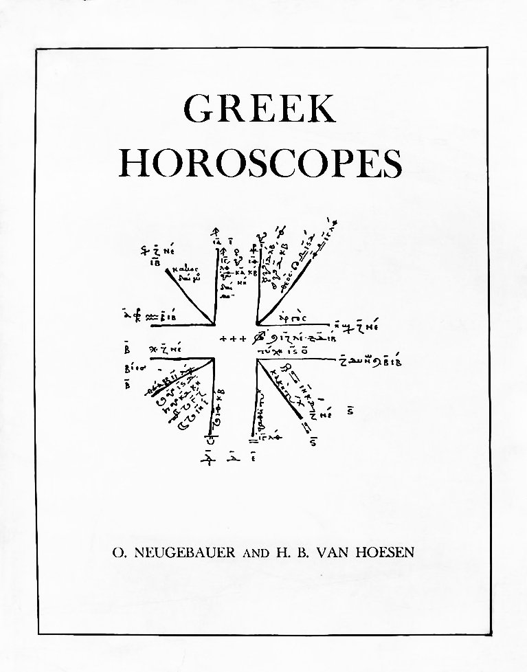
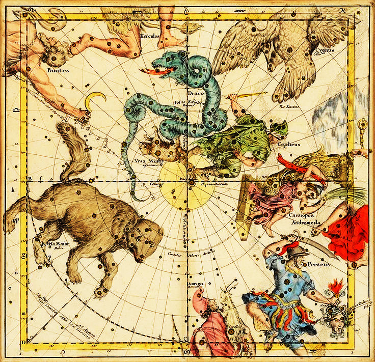
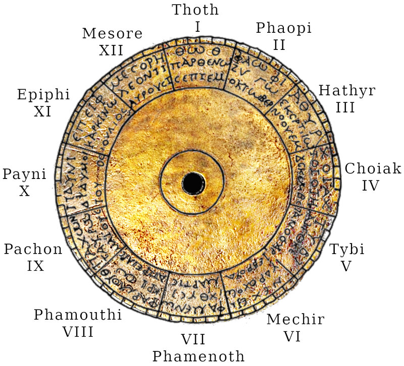
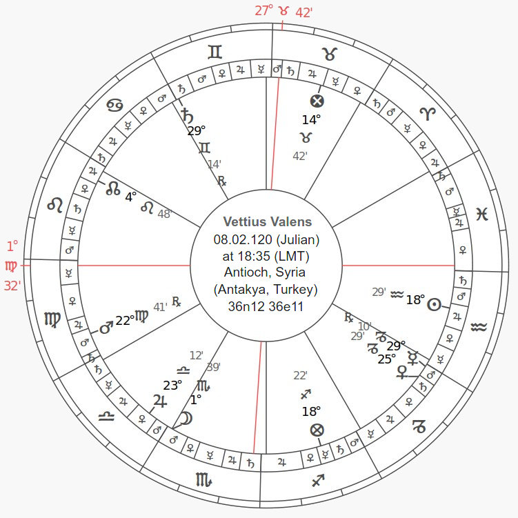
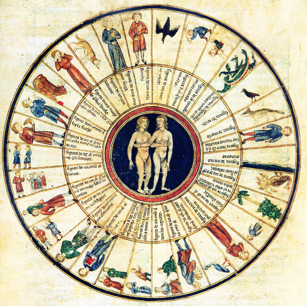

Contents
Sources
Language
Words
Divination
Constellations
Planets, Stars
Weekday Names
Egyptian Months
Signs
Elements
Time Lords
Zodiacal Aphesis
Terms
Monomoiria
Ancient Houses
Topoi, Loci, Places
Phases
Decans, Faces
Dodecatemoria
Paranatellonta
Dignities
Planetary Joys
Profections
Medicine
Daimons
Conception
Sources
Language
Words
Divination
Constellations
Planets, Stars
Weekday Names
Egyptian Months
Signs
Elements
Time Lords
Zodiacal Aphesis
Terms
Monomoiria
Ancient Houses
Topoi, Loci, Places
Phases
Decans, Faces
Dodecatemoria
Paranatellonta
Dignities
Planetary Joys
Profections
Medicine
Daimons
Conception
Interpreting Charts with Vettius Valens
Since this entire work is about Hermetic Astrology, it is best to rely upon an authority who worked exclusively in this arena and who has stood the test of time over an extreme number of centuries. Vettius Valens is one such astrologer who knows best how to interpret a chart within this context and luckily his writings are still available to us.Vettius Valens (08.02.120-07.184 CE) was a Greco-Roman Hellenistic astrologer who authored the "Anthologies" (ἀνθολογίαι), a textbook style set of astrological instructions written in the second century CE, nine volumes of which have survived. The content is unusual, not only because Valens was a practicing Hermetic astrologer who describes his methods in great detail, but also because he provides 125 horoscopes pertaining to the ancient world. The descriptions have proved to be astronomically accurate and informative, both astrologically and historically. In fact they represent almost the entirety of horoscopes remaining from that era. Outside those, only five others are to be found before the year 380 CE. He also includes a chart which is very likely his own.
According to most of his biographers, Vettius Valens was a native of the ancient Syrian city of Antioch now known as Antakya in Turkey. After much travelling in search of knowledge, which he said was unreliable, he eventually moved to Egypt. There he settled in the city of Alexandria, the famed center of learning, and commercially more advantageous for his astrology. This is purportedly where he eventually wrote The Anthologies as a text book for his students.
The Anthologies were written sometime between the years 150 and 175 CE and were in use for at least thirteen centuries throughout the dark and middle ages up to the renaissance. Unlike the Tetrabiblos (also known as Apotelesmatika) from Claudius Ptolomy, which also was in use for as many centuries, the Anthologies were from the point of view, and experience of an actively professional astrologer, whereas Ptolomy, who was simply a compiler of the theories of the time, was neither an astrologer nor particularly familiar with the subject in a practical manner.
It has often been mentioned that the techniques used by Valens differed significantly from that of his contemporary, Ptolomy. This is easily explained by the fact that Valens was a Hermetic astrologer and his knowledge was based on a different set of theories and techniques. By carefully studying the Anthologies, much is revealed as to what those unique methods were. Because this was the subject of much study for so long, it is not too surprising that a lot of this material has entered into mainstream astrology still being practised today. Some have taken the Hermetic nature of his work to be of Stoic origin, overlooking how much Stoicism was influenced by Hermeticism.
Especially when it comes to Valens, the Hermetic peculiarities in his astrology, are still puzzling philologists, historians and astrologers who are unable to borrow from preconceived ideas with the intention of 'correcting' any errors they 'discover' in his old texts, justifying their method through claims that the texts have experienced transcription errors over time. Thus, many ancient texts have been modified so extensively that their importance has suffered. Luckily, the Anthologies, at least since the Byzantine (395–1453 CE), seems to have been spared much of this fate.
Vettius Valens said at the beginning of the Anthologies Book 6:
"I have written this because I have prided myself on the knowledge bestowed on me from heaven by the Divinity, knowledge which is now dishonoured and rejected, even though it is primordial and governs everything in life, and even though without it there neither is nor will be anything. Now even its name seems to be hated, although men before our times prayed for it and blessed themselves by it. I am grieved by this, and I envy the old kings and rulers who devoted themselves to such matters. I am envious because I was not fortunate enough to live in those times which saw such a climate of free and ungrudging speech and inquiry. Their devotion to this science was so enthusiastic and so steadfast that they left the earthly sphere and walked the heavens, associating with the heavenly souls and the divine, holy Minds. Of this Nechepso is a witness when he says: I seemed to walk the midnight aether, and a voice from heaven echoed around me, at which the dark robe covered my flesh, bringing the gloom of night… and so on. Who would not consider this knowledge to be superior to any other and to be blessed, since by means of it one can know the sun’s ordered paths which foretell the changing seasons when it enters the tropics in the advances and retardations of its motion; one can know the risings and settings, the days and nights, the seasons’ cold or heat, and the weather? It is also possible to know the varying paths of the moon, its inclinations and departures, its waxing and waning, its heights and its depths, the direction of its winds, its contacts and separations, its eclipses, its near eclipses, and all the rest. From all this it seems possible to understand everything on earth, in the seas, in heaven, as well as the beginning and end of all events. Likewise for the five other stars, with their motions, their uneven paths, and their varied phases."
Sources
The Sources used by Vettius Valens
Valens said that his astronomical material was mainly sourced from the astronomers Hipparchus and Apollonius. His data for the sun and moon were from the Babylonians, Kidenas and Soudines. He mentioned that he studied the "the ancients", namely the legendary Egyptian astrologers, "King" Nechepso and the Sage Petosiris as well as Critodemus, an astrologer from the first century.Prof. Mark Riley in A Survey of Vettius Valens has a section entitled
QUOTATIONS FROM EARLIER ASTROLOGERS, which mentions:
- Abraham ('Αβραμος)
- Apollinarios
- Aristarchus
- Asklation
- Asklepios
- Critodemus
- Hermeias
- Hermippos
- Hipparchus
- Hypsicles
- Kidenas the Babylonian
- Meton the Athenian, Euctemon, and Philip
- King Nechepso and Petosiris, "The Ancients"
- Orion
- The Sphaerica (тà Σpaιρikά) but not by Aratus, Eudoxus, or Hipparchus
- Thrasyllos
- Timaios
- Zoroaster
- Valens didn't quote: Dorotheus, Manilius, Aratus, Eudoxus, Ptolemy
The Sources used by the Translators
The texts which were used for modern translations of Vettius Valens, came from two sources, both in Greek with Latin prefaces and footnotes. The earlier one was from Wilhelm Kroll, dated 1908. The other was from David Pingree, and published in 1986.These in turn originate from a Byzantine fifth century manuscript in ancient Greek. Since this is hundreds of years after the original was written, consideration should be made that the text was handled by later scribes who likely made alterations and additions. This becomes especially obvious when it comes to charts which can be dated to times after the author's death.
As is mentioned in an article in Wikipedia on the phenomenon of "interpolation":
An interpolation, in relation to literature and especially ancient manuscripts, is an entry or passage in a text that was not written by the original author. As there are often several generations of copies between an extant copy of an ancient text and the original, each handwritten by different scribes, there is a natural tendency for extraneous material to be inserted into such documents over time.
In the light of this, it seems that The Anthologies were kept in circulation for so long simply because they were altered by "innovation", a term used by Franz Dolveck, in his review of "Texts, Editors, and Readers: Methods and Problems in Latin Textual Criticism. Roman Literature and its Contexts". The innovation in this case would represent later astrological methods deemed popular or important enough to be included. One that springs to mind is that of the "Lot of Travel" (Anthologies, Book 2, Chapter 29) which suspiciously appears to be an "Arabic Part" of later invention and not in use prior to the astrology of the Islamic world.
The first English translations of The Anthologies were made by Robert Schmidt and ran between 1993 to 2001 in a series from Robert Hand's Golden Hind Press. The earliest translation into German appeared in 2004 under the title of Blütensträusse by Otto Schönberger and Eberhard Knobloch. Finally, the most recent translation into English was by Professor Mark Riley who made it available on the internet in 2010 and is now in book form published by Chris Brennan.

In 1959, the Austrian mathematician and astronomer, Otto Neugebauer (1899-1990), together with the American scholar and librarian, Henry Bartlett van Hoesen (1885-1965), published Greek Horoscopes, which was a collection of literary data found in ancient manuscripts. They were the first to mention the importance of the writings of Vettius Valens as supplying reliable information regarding the astronomical methods employed by an astrologer of the ancient world. Even though the dates were not specifically mentioned, the two researchers managed to verify his astronomical data by what Valens had mentioned in his astrology.
Nevertheless, despite their good intentions and rigorous scholastic approach, on page 10 of Greek Horoscopes is an example of the type of confident false assumption, backed up by unrelated fact, written about the word "phase" (φάσή) supposedly as it was used in The Anthologies:
The concept of "phase" is probably derived from the observation of bright fixed stars. In the Greek calendars the characteristic risings and settings of stars are listed in their relation to the seasons. These first or last appearances in the morning or evening are called the "phases."
as well as on pages 27 and 28:
"Phase." This term is used here in a much looser sense than ordinarily (cf., Introduction p. 10). Mercury at superior conjunction is said to have completed its phase." This can only mean that its "phase" as morning star is ended.
Both of these are incorrect and the meaning of the word "phase" (φάσή) fits better the meaning used on the page » Cycles and Phases.
Robert Schmidt said in "The So-Called 'Problem of House Division'":
What modern translators of Greek or Latin astrological writings, such as Holden and to a lesser extent Riley, normally do is substitute modern astrological terminology for the Greek wherever possible, often to the extinction of the original meaning. The problem is that, even though much modern astrological terminology ultimately derives from the tradition, the original and often quite subtle connotations of the original Greek or Latin terms from which the modern terminology derives have disappeared entirely. There is no better example of this than the translation of Greek topos or Latin locus—both of which mean simply mean ‘place’—as ‘house’. The connotations of the word ‘house’ actually take us away from the original sense.

Language and Gender
The words "feminine" and "masculine" are very often used in astrology and Vettius Valens uses them a lot to denote specific qualities and tendencies. Although always done for convenience, they should never be understood to mean the same as when biologically referring to humans. The idea of intermingling these ideas should also be avoided. To help with understanding these symbols, it is perhaps advisable to adopt an attitude that they are specialist terms with specialist meanings.
Anthologies Book I 12. Masculine and Feminine Degrees:
The masculine and feminine degrees are as follows: the first 2½ degrees of the masculine signs are masculine, the next 2½ degrees are feminine. The first 2½ degrees of feminine signs are feminine, the next 2½ degrees are masculine, the next 2½ are feminine.
The concept of "feminine", in astrology, is also referred to as "negative", another problematic word when taken to mean the same as in common use. The actual meaning within astrology is that of being receptive, perceptive, open, creative, considerate, sensitive, and so forth. If anything, the popular human female stereotype could gain from acquiring more of the astrological symbolism. Lastly, "feminine" is more akin to the concept of "yin" in eastern philosophy, and it is there, that a lot more insight may be gained.
The concept of "masculine" in astrology is also referred to as "positive". This can be confusing when not understood within its astrological context. Astrologically, "masculine" actually means outgoing, demonstrative, confident, focused, willing, studious, insightful and so forth. Once again, the male stereotype could likely benefit from absorbing more of the astrological symbolism, rather than relying so much, on the claims of psychology. The eastern concept of "yang" can also yield some greater insights.
Positive and Negative
These ideas of "negative" and "positive" are more closely related to the terms as used in the physics of electricity, describing the direction of a current, or perhaps in the eastern philosophy of "yin and yang", than they are as to what they mean in psychology with its judgemental overloading. It's all to do with the "flow".
In that light, positive could also be considered as giving or sending (bad or good), and negative as taking or receiving (bad or good).
Finally, in astrology, nothing is only "feminine" or "masculine", for they are tendencies. There is always a mix of their characteristics. Sometimes an astrologer might describe someone, or something, as more feminine, or more masculine but this only refers to the summation of all the elements, themes and chords under consideration, mainly to assist in portraying an overall impression.
Two Examples
1. The Sign of Taurus, the Bull, is female.
It is the astrological gender of the Sign which is female, and not Taurus or the Bull. When an astrologer refers to Taurus as female, it is understood that it is the "Sign of Taurus" being addressed.
The animal known as the Bull, is male.
It is the biological gender of the animal which is male. When people speak of a bull, it is understood to mean some male animal.
2. The Symbol of the Moon is female.
It is the astrological gender of the symbol which is female, not the Moon. When the Moon is referred to as "she", it is meant, and should be understood, to be poetic, not literal. The Moon itself has no reproductive faculty to be fecundated.
The German word for moon, "der Mond", is male.
It is the linguistic gender of the word which is male, not the object which it names, the Moon. This linguistic gender facilitates usage within the context of language. "Der Mond" has no reproductive faculty and is not understood as being able to fecundate.

 How the Ancient (Known) World looked, according to Herodot (c. 484 – c. 425 BC). Across the top is Europe. The blue area in the middle is the Mediterranean and other seas. To the right is the Persian Empire and over to India. At the bottom is Africa, including Libya and Egypt.
How the Ancient (Known) World looked, according to Herodot (c. 484 – c. 425 BC). Across the top is Europe. The blue area in the middle is the Mediterranean and other seas. To the right is the Persian Empire and over to India. At the bottom is Africa, including Libya and Egypt.
Some Bantered Words
As is often the problem with all translations, using the meaning from a modern language, for a foreign or ancient word, has the flaw of misleading the reader into thinking that the word has always actually meant that which a modern localised interpretation has on offer. Some translators make attempt to be more poetic so as to bring across a feeling for a concept or expression but that remains totally subjective and opinionated. Others try the path of literal translation of each and every word but that is not only somewhat stilted, it is also tainted by meanings which were modified over the course of time such that the latest meaning is adopted.
Many of these conversions distort text so extremely that the reader is left with a rather unsettling impression that astrology, for instance, is a static science which is impervious to change. Take for instance the scholars studying the ancient texts who "know" that the word "horoskopos" means "horoscope" in the modern sense of "fortune telling". Whenever they encountered that word in an ancient text, a bell rang, and then the ancient world was full of superstition in the form of fortune telling. Nowadays, of course, academics are better informed and wouldn't make such a mistake but their authoritative references still contain those errors which are sadly perpetuated.
Astronomy or Astrology
It is often said that the ancient world used these words interchangeably, but that would not be correct. To clarify the difference between astronomy and astrology it is a good idea to employ the Hermetic dictum "As Above, So Below". With the help of these words, astronomy is concerned only with the phenomena of the heavens, "As Above". Conversely, astrology is only concerned over that which occurs on Earth, "So Below". For those who have studied both disciplines, for instance, Johannes Kepler, both are sciences, yet with different aims.| Word |
Original Meaning |
Modern Usage |
| Astrology |
Literally, the course or discourse of stars and the study of the symbolic correspondences between objects in the heavens and on earth which included calculations later called astronomy |
Worship of all stars, as gods, in the sky or superstitious belief in fates on earth or any prediction of fortune or a pseudo-science without scientific proof |
| Horoscope |
Literally, an hour watcher indicating the time of the sign rising on the eastern horizon denoting the starting point of an astrological chart or simply a chart interpretation |
Any astrological chart or sun-sign astrology in general or any prediction of fortune or simply a chart interpretation |
| Planets |
Literally, moving celestial bodies coursing through the signs of the zodiac which includes the sun and the moon |
Only those objects moving around the sun in the heliocentric astronomical model which excludes the sun and the moon |
| World |
Geocentric as an astrological context As Cosmos in Greek, all creation As Mundus in Latin, sub-lunary As Universe in English, everything As Flat, As the Plane of the Ecliptic |
As the planet Earth, heliocentrically As the environs As experience As everything in nature As spherical like the planet Earth |
| Element |
One of Fire, Air, Water, Earth The philosophical basis of the Cosmos That which can be combined with other elements to form Matter |
An atom of chemistry An item in the Periodic Table That which can be combined with other elements to form molecules |
For instance:
A third example is the Greek term "horoskopos" which denotes the
degree (or entire sign) of the zodiac that is rising in the East. It goes back to the Egyptian habit of time-keeping at night by observing the part of the zodiac (or, more precisely, the decanal deity) that was rising in the East and “watching (and thereby indicating) the hour” (oro + skopos). Since this data was in the opinion of Hellenistic astrologers on the shores of the Nile the most important astronomical element of a nativity, it later came to denote – by way of pars pro toto – the entire birth chart, giving rise to the modern term "horoscope". However, this extended notion is post-ancient and not attested in Greco-Roman sources. 34 An emic translation of "horoskopos" is “hour-watcher”. Less preferable, but closer to modern terminology is "ascendant".
(Stephan Heilen in Problems in translating ancient Greek astrological texts,
in Writings of Early Scholars in the Ancient Near East, Egypt, Rome, Section IV page 249, edited by Imhausen and Pommerening)
Divination and Prediction
The history of Divination is rooted firmly in Babylonian tradition, which itself was intimately tied to the calendar as well as daily measurement of time. The earliest known information about star-gazing involved tabulation of celestial phenomena of the sun, moon and stars, in order to form calendrical predictions and daily measurements of time. These were often accompanied by predictions as to what those celestial signs meant, which were mostly about catastrophic fallings and risings of a political nature.
Even though Babylonian observations identified twelve signs of the Zodiac, they were directly derived from constellations, and as such were unequal in size. Having said that, there is currently a dispute as to who invented the twelve zodiacal signs of equal size. Whether it was the Babylonians making a later innovation for mathematical reasons or it was the Egyptians or Greeks, is a matter for further investigation. Whatever the case, a year was divided into 360 days and historical research has revealed that the division of twelve lay at the basis of Babylonian reckoning and their astronomy is attributed with the invention of a yearly cycle divided into twelve months and hence the twelve signs of the Zodiac.
By the time astrology and astronomy were incorporated into the Hellenistic world, each year was aligned with 360 days and in turn produced 360 degrees in a circle. Each sign of the Zodiac then became one twelfth of the circle and therefore had 30 degrees. Each of the twelve months likewise consisted of thirty days. Even though such a calendar provided a neat system, the twelve months were observed not to align with the twelve lunations occurring each year and the 360 days fell short of a yearly cycle of the sun by five and a quarter days. This called for corrections to the calendar to compensate. To account for misalignment with the celestial observations, another five days were added onto the end of each year.
Astrology’s claim that the motions of the celestial bodies were not only indications but actual (efficient) causes of change on earth shows astrology to be antithetical to divination, which depends solely on the will of the deity to provide signs.
(Francesca Rochberg, In the Path of the Moon - Babylonian Celestial Divination and Its Legacy (2010) p146)
Constellations and Stars

Constellations are not the same as Signs of the Zodiac. Astrology descends from a mathematical and sacred division into twelve equal segments of a circle surrounding the earth. This circle is called the Ecliptic which is the exact course of the Sun around the Earth, as viewed from the Earth. It also happens to be the course for all "Planets", including especially the Sun and Moon.
The idea of Constellations of stars coinciding with these twelve divisions is only superimposed over those segments of the ecliptic in the sky. To recognise these constellations has always been an amusing past-time for idle star-gazers of the night sky. However fascinating this may be, and no matter how old the notion is, it is not astrology. And trying to see a Ram in the constellation of Aries, and so forth, is impossible. These few dots in the sky look nothing like what is claimed; that the symbolism of the signs came from observation of the constellations.
The Constellations and the stars therein, are not part of the rigorous mathematics of the exact thirty degrees of the ecliptic which astrological, and therefore astronomical, signs occupy. The stars which make up these constellations bearing the same names as the astrological and astronomical signs, are not part of our concern here.
The fact that the starting point of the ecliptic is determined to be at zero degrees of the first sign, Aries, is a mathematically calculated point, in the east, where the celestial plane of the ecliptic intersects the plane of the celestial equator, a circle projected in space from the plane of the Earth's equator. The twelve signs which follow on from that point have nothing to do with the constellations.
Those who are concerned that zero degrees of Aries no longer aligns with the constellation of Aries in the sky, are totally missing the point of astrology, as well as astronomy, for that matter, for these two sciences are both using the exact same mathematical framework. Where the mistake crept in, is simply by using the words "Star" and "Constellation incorrectly for "Planet" and "Sign".
Strangely, the word "constellation" once meant in astrology, what is now called a "configuration", meaning the relationship between two or more planets in the chart. Some old-fashioned astrologers still use the former expression.
Those who are talking about astrology, are talking about the planets, including the Sun and Moon, moving around the Earth, as seen from the Earth. This system is geocentric, not heliocentric, because we as humans, live on the Earth, not the Sun. All of the planets, seven traditionally, move along the ecliptic, through the background of the fixed stars of the constellations. It's the movement of those planets in their changing patterns corresponding to changing patterns on Earth, that enliven Astrology.
The Planets, The Stars
The ancient Greco-Roman world was part of the enormous Roman Empire which had Greek as the standard language for leaders and intellectuals. Vettius Valens would have counted as being an intellectual and as such, The Anthologies were written in Greek. His usage of the word "asteron" when describing the symbolism of the planets, is strange, but could be explained by its similarity to the word "astrology". Be that as it may, his first book which dealt with the most fundamental symbolism in astrology, referred to the planets, or stars, by their Greek names:
| English | Greek | Meanings, Effects and Affections (from Vettius Valens) | |
| Saturn | g | Kronos or Phainōn |
petty, malignant, care-worn, self-depreciating, solitary, deceitful, secretive with trickery, strict, downcast, with a hypocritical air, squalid, black-clad, importunate, sad-looking, miserable, nautical leaning, plying waterside trades, also causes humblings, sluggishness, unemployment, business obstacles, interminable lawsuits, business subversion, secrets, imprisonment, chains, griefs, accusations, tears, bereavement, capture, exposures of children. Saturn makes serfs and farmers because of its rule over the land, and it causes men to be renters of property, tax farmers, violent in action. great ranks, distinguished positions, supervisions, property management, fathership of others’ children |
| Jupiter | f | Zeus or Phaethon |
engendering, desire, loves, childbearing, political ties, acquaintance, friendships with great men, prosperity, salaries, great gifts, an abundance of crops, justice, offices, office holding, ranks, authority over temples, arbitrations, trusts, inheritance, brotherhood, fellowship, beneficence, secure possession of goods, relief from troubles, release from bonds, freedom, deposits in trust, money, stewardships |
| Mars | e | Ares or Thouros |
force, wars, plunderings, screams, violence, whoring, loss of property, banishment, exile, alienation from parents, capture, deaths of wives, abortions, love affairs, marriages, loss of goods, lies, vain hopes, strong-armed robbery, banditry, looting, quarrels among friends, anger, fighting, verbal abuse, hatreds, lawsuits, violent murders, slashings, bloodshed, fever attacks, ulceration, boils, burns, chains, torture, masculinity, false oaths, wandering, embassies under difficult circumstances, actions involving fire or iron, craftwork, masonry, commands, campaigns, leadership, infantrymen, governorships, hunting, wild game, falls from heights or from animals, weak vision, strokes |
| Sun | d | Helios (not Apollo) |
nature’s fire and intellectual light, organ of mental perception, kingship, rule, intellect, intelligence, beauty, motion, loftiness of fortune, ordinance of the gods, judgement, public reputation, action, authority over the masses, father, master, friendship, noble personages, honours consisting of pictures, statues, and garlands, high priesthoods, rule over one’s country and over other places |
| Venus | c | Aphrodite | mother and nurture, priesthoods, school super-intendents, high offices with the right to wear a gold ring or a crown, cheerfulness, friendship, companionship, acquisition of property, purchase of ornaments, agreements on favourable terms, marriages, pure trades, fine voices, taste for music, sweet singing, beauty, painting, mixing of colors both in embroidery, dyeing, and unguent making, inventors and masters of these crafts, as well as craftsmanship or trade, and work in emeralds, precious stones, and ivory, gold-spinners, gold workers, barbers, people fond of cleanliness and toys, office of supervisor of weights and measures, standards of weights and measures, markets, factories, giving and receiving of gifts, laughter, good cheer, ornamentation, hunting in moist places, benefits from royal women or from one’s own, brings very high rank when it operates in such affairs |
| Mercury | b | Hermes | education, letters, disputation, reasoning, brotherhood, interpretation, embassies, number, accounts, geometry, markets, youth, games, theft, association, communication, service, gain, discoveries, obedience, sport, wrestling, declamation, certification, supervision, weighing and measuring, testing of coinage, hearing, versatility, forethought, intelligence, lord over brothers and of younger children, creator of all marketing and banking, temple builders, modellers, sculptors, doctors, secretaries, legal advisors, orators, philosophers, architects, musicians, prophets, diviners, augurs, dream interpreters, braiders, weavers, systematic physicians, those in charge of war and strategy, and those undertaking any unusual, systematic work in accounting or with reasoning, weight lifters and mimes, those making their livelihood with displays of skill, deception, gambling, or sleight of hand, skilled interpreters of the heavens, those who by using pleasure or winning charm, earn fame for their amazing feats — all for the sake of gain, knowledge for some, selling for others, service for others, trade or teaching for others, farming or temple service or public employment for still others, authority, rentals, labor contracting, rhythmical performance, display of public service, acquisition of personal attendants, right of wearing temple-linen, robed in the luxury appropriate to gods or rulers |
| Moon | a | Selene or Mēnē |
reflection of the sun’s light and possessing a borrowed light, in a nativity indicates life, body, mother, conception, beauty, appearance, sight, marriage, nurture, older brother, housekeeping, queen, mistress of the house, possessions, fortune, the city, assembly of the people, gains, expenses, household, voyages, travel and wanderings |
At the end of Book 1, Chapter 1, Valens says:
Each star is the ruler of its own "element" in the universe with reference to the stars’ sympathy or antipathy or mutual influence. Their aspects are blended according to their "applications" or "separations," their "superior aspects" or "blockages," their "attendance," their "ray-shooting," or the "approach" of their masters. The Moon becomes the ruler of foresight, the Sun the ruler of light, Saturn the ruler of ignorance and necessity, Jupiter the ruler of rank, crowns and zeal. Mars becomes the ruler of action and effort, Venus the ruler of love, desire, and beauty, Mercury the ruler of law, friendship, and trust. These stars have their own effects…
Now that these matters have been settled, the nature of the twelve signs must be mentioned.
Now that these matters have been settled, the nature of the twelve signs must be mentioned.
Weekday Names
Hero of the Day
There is evidence from the research of Ilaria Bultrighini and Sacha Stern that the first mention of the names of the seven days of the week was made in the City of Rome during the first century of the Common Era (CE). There, it remained isolated for some time, making little impact on the outside world. This contradicts the current idea that the seven names were invented by Babylonian, Egyptian or Hellenistic astronomers, for which there is apparently no conclusive evidence.
Vettius Valens, in the Greco-Roman world at the eastern edge of the Mediterranean, is the first person known to mention the origin of the names of the seven week-days. In The Anthologies, Book 1, Chapter 9, A Handy Method for the Seven-Zone System, each day is attributed a planetary ruler which also ruled the first hour of that day. Valens was a practising astrologer in Egypt and his time reckoning was distinctly Egyptian which in turn leaned heavily on Babylonian methods.
In ancient Babylonia, the idea of the month was derived from the time taken by the moon to return to the same position against the background of the fixed stars, which is almost twenty-eight days, now called a Sidereal Month. Throughout each month, the moon can be observed to have four main phases of new moon, first quarter, full moon and last quarter. Each of these constitutes a week of seven days, even though the full cycle takes about twenty-nine and a half days, called a Synodic Month. The twelve months of each year were also the origin of the twelve signs of the zodiac through which the sun would pass each year.
Ancient Egyptian time-keepers divided each day into two parts of lightness and darkness. Each of these was divided into twelve hours with those of daylight tracked by the course of the sun using sundials from sunrise to sunset, and those of darkness measured out by water clocks. Since the amount of daylight was usually not equal to the amount of darkness, the length of daytime hours were not necessarily equal to those of the night.
Since each day had 24 hours, a week had altogether 168 hours (7 x 24). Each hour was astrologically assigned a planetary ruler in what was known as the Chaldean Order, derived from distances to the earth and the time taken to travel through the zodiac, in the order of Saturn, Jupiter, Mars, Sun, Venus, Mercury, Moon.
Each day in the Roman Empire started at sunrise at the time. The first day of the week was given the first of the planets, Saturn, as its ruler, making it Saturn's day. Each hour that followed after, was given as its ruler, the next planet in order. Therefore, the second hour after sunrise on the first day of the week had Jupiter as its ruler, and so on through all seven planets, and then repeating the sequence.
The first hour of the second day, had as its ruler, the Sun, and so that day became the Sun's day. The beginning of the third day was ruled by the Moon and became the Moon's day, and so on through the seven days.
Egyptian Months
and Gregorian Calendar Dates
Even though Vettius Valens lived in the Roman Empire and wrote in Greek, The Anthologies and its translations, refer to the months of the year by their Egyptian names, so here they are with the corresponding dates in the Gregorian calendar which is in use in most of the world today.
The picture is a representation of an artefact found in an archaeological dig in the far north of France. It is surmised that such a disc was employed by astrologers to construct astrological charts around the time of Vettius Valens. Since it has inscriptions of the Egyptian months it is likely to have originated from the area where Vettius Valens was operating.
| Egyptian Month | Gregorian Dates | |
| I | Thoth | Sep 11 - Oct 10 |
| II | Phaopi | Oct 11 - Nov 9 |
| III | Hathyr | Nov 10 - Dec 9 |
| IV | Choiak | Dec 10 - Jan 8 |
| V | Tybi | Jan 9 - Feb 7 |
| VI | Mechir | Feb 8 - Mar 9 |
| VII | Phamenoth | Mar 10 - Apr 8 |
| VIII | Pharmouthi | Apr 9 - May 8 |
| IX | Pachon | May 9 - Jun 7 |
| X | Payni | Jun 8 - Jul 7 |
| XI | Epiphi | Jul 8 - Aug 6 |
| XII | Mesore | Aug 7 - Sep 5 |
| - | (epagomal) | (intercalary month) |

Astrological Disc found in The Ancient Gallo-Roman Village of Chevroches (Nièvre, France)
This excavated 65 mm bronze disc is a unique example from the Roman world of a calculation instrument for making celestial maps. Dating has determined that it was manufactured around the end of the 3rd century CE. The disc is divided into twelve equal sections, each of which has three inscribed words in Greek characters. The outside circle corresponds to the twelve Egyptian months, the middle circle to the signs of the zodiac and the inside circle to the twelve Roman months.
This excavated 65 mm bronze disc is a unique example from the Roman world of a calculation instrument for making celestial maps. Dating has determined that it was manufactured around the end of the 3rd century CE. The disc is divided into twelve equal sections, each of which has three inscribed words in Greek characters. The outside circle corresponds to the twelve Egyptian months, the middle circle to the signs of the zodiac and the inside circle to the twelve Roman months.
Signs
Vettius Valens, Anthologies, Book One
2. The Nature of the Twelve Zodiacal Signs.
There are quite a number of technical terms used in ancient texts, the meanings of which seem to be either lost or reinterpreted over the course of time. Many of these relate to a division of the ecliptic into twelve sections. Signs are the most important twelfth divisions of the zodiac, which is known in astrology and astronomy, as the ecliptic through which the planets course.
Elements, Triplicities and Triangles
Vettius Valens, Anthologies, Book Four (Ln 2364)
Chris Brennan in footnote 1, page 1 of The Planetary Joys said:
I would also like to recognise Robert Schmidt for his early suggestive comments about the triplicity lords and angular triads. Katarche: December 25, 2012, 2:38 PM, Denver, Colorado. (This article was originally published in the International Society for Astrological Research Journal, Vol. 42, No. 1, April 2013.)
and on page 6:
For the past 20 years there has been something of a mystery surrounding how the four classical elements came to be assigned to the specific signs of the zodiac that they are associated with in the Medieval and Modern traditions of astrology. The standard scheme since late antiquity is as follows:
Fire Aries, Leo, Sagittarius Earth Taurus, Virgo, Capricorn Air Gemini, Libra, Aquarius Water Cancer, Scorpio, PiscesIn their 1993 translation of Book I of Vettius Valens’ Anthology, Robert Schmidt and Robert Hand pointed out that Valens is the earliest Hellenistic author to mention these now-familiar associations between the four elements and the signs of the zodiac.
(footnote 17. Valens, Anthology, Book 1, trans. Schmidt, ed. Hand, p. 8, fn. 1.)
For example, Valens says that Aries is fiery, Taurus is earthy, Gemini is airy, Cancer is watery, and so on. He does so in a way that makes it seem as if he is he was getting the associations from an earlier source, though, since Valens appears to take the associations for granted, as if they were common knowledge in his time.
(footnote 18. Particularly see the discussion in Valens, Anthology, 4, 4.)
Schmidt points out that elsewhere in the Anthology Valens tends to let the reader know when he is innovating, which implies that it was not Valens himself who introduced this element-sign relationship
(footnote 19. Schmidt, Definitions and Foundations, p. 94).
Time Lords
The Chronocrators
Vettius Valens was also the first person to systematically use the Time Lords (Greek: chronokratores, χρονοκράτορες), the rulers of cyclical and sequential periods which occur throughout human life and whose calculation covers the span of life.
After becoming somewhat disillusioned by false teachers, Vettius Valens decided to take a break from astrology. His curiosity eventually overcame him once more and he returned to it years later with even more enthusiasm than before over the topic of chronocrators, the time lords. This time he presented everything he could discover on the subject and even developed his own methods to determine how planetary rulerships affect people's lives.
The Time Lords were used in Egyptian astrology before the time of Valens but their origin, and the logic behind them, has since been lost. A number of different methods have been used to discover the ruler of a particular part of life, and more recently have (supposedly) become a modern technique known as (yearly) profections. What he does mention is that someone named Abraham was an authority on the distribution of operative chronocratorship in relation to the Lot of Daimon. Even though Valens talks extensively about Time Lords, starting at Book I 21, he doesn't actually introduce the subject before using the term, as if it didn't require introduction. Some have noted that this could be because it was such common practice at the time that it this would have been unnecessary.
At Anthologies IV 14, there is the first mention of the lengths of rulerships with Saturn as 30 years, Jupiter 12, Mars 15, Sun 19, Venus 8, Mercury 20 and Moon 25. At this point Valens mentions that someone he calls "The King", who is probably the legendary "King Nechepso", introduced in his 13th book, the Lot of Fortune as being the "Ruling Place", a point from which the length of life may be determined.
Book IV of Anthologies starts under the title of The Distributions of Periods. Here Valens has taken the rulerships according to years and converted them for so many months as they previously were for years. In this way, the Time Lords, according to the 10-year 9-month system as it is called in Book III 9, are assigned to 129 month periods divided between the planets in order.
He said:
We believe that we have set forth an appropriate, in fact, magisterial, explanation of the previous [theorems].
We will now reveal a topic investigated by many and hidden from view, namely the distribution of propitious
and impropitious times. We must preface our discussion with the distributions which have been proven by our
own experience. The primary period is one-fourth of the minimum period, as follows:
| Releaser (ἀφέται) |
Period (months) |
1/4 Period | Days/Year |
| Saturn | 30 | 7 ½ years | 685 |
| Jupiter | 12 | 3 years | 34 |
| Mars | 15 | 3 years 9 months | 42 ½ |
| Venus | 8 | 2 years | 22 ⅔ |
| Mercury | 20 | 5 years | 56 ⅔ |
| Sun | 19 | 4 years 9 months | 53 ⅚ |
| Moon | 25 | 6 years 3 months | 70 ⅚ |
Therefore, the first 30 months of life has Saturn as the Time Lord. The next 12 months has Jupiter as its Time Lord, and so on up to the end of the first 129 months by which time all of the first set of periods have occurred and then the cycle repeats. Each of these cycles is 129 months, or 10 years and 9 months, in length.
Three Score Years and Ten
The expression Three Score Years and Ten is derived from one of the methods for determining Time Lords. By this system, known from Shakespeare as the "Seven Ages of Man", human life is allocated seven periods according to the seven planets in order, and totalling 70 years altogether: Seven Ages of Man, 1485
Seven Ages of Man, 1485
 Seven Ages of Man, William Mulready, 1838
Seven Ages of Man, William Mulready, 1838
| Planet | Years | Age | Affects | Seven Ages of Man (by William Shakespeare) All the world’s a stage, And all the men and women merely players; They have their exits and their entrances, And one man in his time plays many parts, His acts being seven ages. |
| Moon | 7 | 0-7 | nursing, infancy |
At first the infant, Mewling and puking in the nurse’s arms; |
| Mercury | 8 | 7-15 | childhood, education |
And then the whining schoolboy, with his satchel And shining morning face, creeping like snail Unwillingly to school. |
| Venus | 9 | 15-24 | adolescence, love |
And then the lover, Sighing like furnace, with a woeful ballad Made to his mistress’ eyebrow. |
| Sun | 10 | 24-34 | young adulthood, activity |
Then a soldier,
Full of strange oaths, and bearded like the pard, Jealous in honor, sudden and quick in quarrel, Seeking the bubble reputation Even in the cannon’s mouth. |
| Mars | 11 | 34-45 | manhood, friction, dissension |
And then the justice, In fair round belly with good capon lined, With eyes severe and beard of formal cut, Full of wise saws and modern instances; And so he plays his part. |
| Jupiter | 12 | 45-57 | elderliness, legal, religious |
The sixth age shifts Into the lean and slippered pantaloon, With spectacles on nose and pouch on side; His youthful hose, well saved, a world too wide For his shrunk shank; and his big manly voice, Turning again toward childish treble, pipes And whistles in his sound. |
| Saturn | 13 | 57-70 | old age | Last scene of all, That ends this strange eventful history, Is second childishness and mere oblivion, Sans teeth, sans eyes, sans taste, sans everything |
Zodiacal Aphesis (Releasing)
and Planetary Period Chronocrators
The word aphesis (Greek: ἄφεσις) means "releasing" or "sending out", and is called "starter" in Greek Horoscopes, page 12.
Martin Gansten in Balbillus and the Method of aphesis:
The two systems of direction, aphesis (ἄφεσις), "sending out, release," was one of the most prominent prognostic methods of classical Greek astrology, subsequently known to medieval Perso-Arabic astrologers as at-tasyir and to their Latin translators as athazir or directio. As the method had its foundation in the apparent diurnal rotation of the celestial sphere, sometimes known as the "primary motion" of the heavenly bodies (as opposed to their proper or "secondary" motion along the ecliptic), it has been known since early modern times as primary direction.
Vettius Valens in Anthologies, Book Three,
Chapter 6. Examples Illustrating the Previous Chapters:
An example:
Sun in Cancer 29° 30',
Moon in Pisces 12°,
Saturn in Sagittarius 27° 8',
Jupiter in Capricorn 22° 13' 7°?,
Mars in Scorpio 7° 23',
Venus in Cancer 28° 13',
Mercury in Leo 11° 25',
Ascendant in Pisces 17°,
MC in Sagittarius 25°.
The nativity was without a houseruler because Venus, the ruler of the terms of the Moon, had already set. The apheta was the Ascendant. Mercury, the ruler of its Ascendant’s terms, was itself found just preceding the Descendant. Thus the vital sector extends from the Ascendant to the point square Gemini 17°, and to the projection of rays on the part of Saturn into the point in opposition to Saturn: Gemini 27° to Saturn, which is in the terms of a malefic Saturn. Mars deflected its diametrically opposite ray because Jupiter was found in an equivalent degree and hindered the anaeretic influence. The native died at age 69, but if Jupiter trine had not hindered this malign influence, he would have lived only 64 years.
| Sign | Planet | Period |
| Aries, Scorpio | Mars | 15 years |
| Taurus, Libra | Venus | 8 years |
| Gemini, Virgo | Mercury | 20 years |
| Cancer | Moon | 25 years |
| Leo | Sun | 19 years |
| Sagittarius, Pisces | Jupiter | 12 years |
| Capricorn | Saturn | 27 years |
| Aquarius | Saturn | 30 years |
Explanation by Vettius Valens, in Anthologies, Book Four,
Chapter 6. How Many Years Each Sign Allots. The Maximum Years of Each Star.
Aquarius allots 30 years, Capricorn 27. The reason: the Sun rules a maximum period of 120 years, half of which is 60. Half of this, 30, is assigned to Aquarius, the sign in opposition to Leo, the Sun's sign. The Moon rules a maximum period of 108 years, half of which is 54. Half of this, 27, is assigned to Capricorn, the sign in opposition to Cancer, the Moon's sign. The total for these two signs is 57, which is the maximum period of Saturn.
The rest of the stars take their maximum assignment of years from the Sun and the Moon. The Sun assigns to Jupiter, which is a member of the same sect diurnal and which has sympathy with the Sun, being a member of the same triangle Leo Sagittarius Aries, half of its 120 years plus the length of its minimum period, 19 years. The total for Jupiter is 79 years. The Moon allots to Jupiter in the same way, because they are both benefics and both are in cosmic sympathy, Jupiter being in Pisces, in the same triangle as Cancer, the Moon's sign. The Moon allots half of its 108 years, 54, plus its minimum period, 25. The total is also 79.
The Moon allots to Mars, a member of the same sect nocturnal 54 years. The Sun, however, refuses to allot to Mars because of Mars’ fiery nature which imitates the Sun and because of its malefic ways, and so the task of allotting passes to the next ruler in the triangle Leo Sagittarius Aries, Jupiter, and it allots its minimum period, 12 years. The total is now 66 years.
Likewise the Moon allots to Venus, because of its nocturnal sect and because of the sympathy derived from being exalted in Pisces in the same triangle Cancer Pisces Scorpio, its 54 years, and Saturn allots 30 years, because its exaltation in Libra is opposite Venus’. The total is 84 years.
Mercury gets the maximum period, 57 years, from Saturn, because they are co-houserulers in the triangle Virgo Capricorn Taurus, plus the minimum period of the Sun, 19. The total is 76.
The rest of the stars take their maximum assignment of years from the Sun and the Moon. The Sun assigns to Jupiter, which is a member of the same sect diurnal and which has sympathy with the Sun, being a member of the same triangle Leo Sagittarius Aries, half of its 120 years plus the length of its minimum period, 19 years. The total for Jupiter is 79 years. The Moon allots to Jupiter in the same way, because they are both benefics and both are in cosmic sympathy, Jupiter being in Pisces, in the same triangle as Cancer, the Moon's sign. The Moon allots half of its 108 years, 54, plus its minimum period, 25. The total is also 79.
The Moon allots to Mars, a member of the same sect nocturnal 54 years. The Sun, however, refuses to allot to Mars because of Mars’ fiery nature which imitates the Sun and because of its malefic ways, and so the task of allotting passes to the next ruler in the triangle Leo Sagittarius Aries, Jupiter, and it allots its minimum period, 12 years. The total is now 66 years.
Likewise the Moon allots to Venus, because of its nocturnal sect and because of the sympathy derived from being exalted in Pisces in the same triangle Cancer Pisces Scorpio, its 54 years, and Saturn allots 30 years, because its exaltation in Libra is opposite Venus’. The total is 84 years.
Mercury gets the maximum period, 57 years, from Saturn, because they are co-houserulers in the triangle Virgo Capricorn Taurus, plus the minimum period of the Sun, 19. The total is 76.
Curtis Manwaring in his article, Zodiacal Releasing (Aphesis) and Planetary Period Chronocrators (1997-2017):
The ancient position [stance, opinion] was that a planet does not "transit" unless it is a chronocrator for the times for the issue [situation] being sought; in other words, it must be a time lord so that the planets testimony about the native's life can be heard. This would explain the times that a transit appears to be mute, i.e., does not manifest in any obvious way.

Chart for Vettius Valens
08.02.120 (Julian) at 18:35 (LMT)
Antioch, Syria (Antakya, Turkey)
36n12 36e11
Moon a, Scorpio H 01°39´, 3rd
Mercury b, Capricorn J 29°10´ $, 5th
Venus c, Capricorn J 25°30´, 5th
Sun d, Aquarius K 18°30´, 6th
Mars e, Virgo F 22°42´ $, 1st
Jupiter f, Libra G 23°12´, 2nd
Saturn g, Gemini C 29°15´ $, 10th
Moon's Node l, Leo E 04°48´, 3rd
tyche o, Sagittarius I 18°23´, 4th
daimon p, Taurus B 14°42´, 9th
Ascendant, Virgo F 01°32´
Midheaven, Taurus B 27°42´
| Table of Egyptian Terms According to Vettius Valens | |||
| Sign | Term Degrees - Chronocrators (Rulers) - Tendencies | ||
| Aries | 0° ‑ 6° | Jupiter | temperate, robust, prolific, beneficent |
| 6° ‑ 12° | Venus | cheerful, clever, radiant, even, pure, handsome | |
| 12° ‑ 20° | Mercury | changeable, clever, idle, windy, stormy, thunderous | |
| 20° ‑ 25° | Mars | baneful, fiery, unsteady, rash, wicked | |
| 25° ‑ 30° | Saturn | cold, barren, malicious, injured | |
| Taurus | 0° ‑ 8° | Venus | prolific, many children, moist, down-trending, convicted, hates children |
| 8° ‑ 14° | Mercury | intelligent, sensible, criminal, few offspring, sinister, fatal | |
| 14° ‑ 22° | Jupiter | great-hearted, bold, lucky, ruling, beneficent, magnanimous, temperate, loving modesty | |
| 22° ‑ 27° | Saturn | barren, eunuch, vagabond, censorious, theatrical, gloomy, toilsome | |
| 27° ‑ 30° | Mars | masculine, tyrannical, fiery, harsh, murderous, temple-looter, infamous-criminal, destructive, short-lived | |
| Gemini | 0° ‑ 6° | Mercury | temperate fine weather intelligent versatile skilled active poetic prolific |
| 6° ‑ 12° | Jupiter | competitive temperate fine weather prolific luxuriant beneficent | |
| 12° ‑ 17° | Venus | blossoming loves plays & mimes contest winner artistic popular cheerful poetic prolific | |
| 17° ‑ 24° | Mars | burdened without brothers few children wanderer good income destructive bloody inquisitive | |
| 24° ‑ 30° | Saturn | temperate procurator having possessions intellectual wide knowledge distinguished noted intelligence arranges great matters most famous | |
| Cancer | 0° ‑ 7° | Mars | hurling thunderbolts, moved back & forth, manic, contradictory wishes, prolific, uneven, poor, destructive base at end |
| 7° ‑ 13° | Venus | prolific, censorius, moist, changeable, promiscuous, popular, skilled | |
| 13° ‑ 19° | Mercury | precise, robber, public leader, tax gatherer, in the public eye, wealth-producing, rich | |
| 19° ‑ 26° | Jupiter | kingly, imperious, glorious, judging, great-hearted, temperate, ruling, entirely noble | |
| 26° ‑ 30° | Saturn | everything is water moist, poor in personal property, needy in end | |
| Leo | 0° ‑ 6° | Jupiter | experienced, masculine, imperious and general leadership qualities, active, eminent, no mean traits |
| 6° ‑ 11° | Venus | very temperate, yielding, talented, luxurious | |
| 11° ‑ 18° | Saturn | much experience, fearful, scientific, naturally clever, narrow, religious, with many children, searching out secret lore, barren, without offspring | |
| 18° ‑ 24° | Mercury | addicted to plays and mimes, popular, guiding, scholastic, prescribing, intelligent, barren and characteristic of long-lived men | |
| 24° ‑ 30° | Mars | very base and monstrous, destructive, injured, torpid, censured, unlucky | |
| Virgo | 0° ‑ 7° | Mercury | lofty, procuratorial, an arranger, handsome, organizing great affairs, most intelligent, entirely noble and eminent, unlucky in love. This misfortune is generally true of Virgo, especially in this term and in that of Venus. This term causes men who are open to criticism; the term of Venus causes those who err constantly. They fall conspicuously short in regard to boys. |
| 7° ‑ 17° | Venus | censured, wronging their marriage and falling into difficulty because of this, lucky in theatrical matters. They are most unnatural in their passions, especially when Saturn is in aspect; when Mercury is in aspect, they commit adultery; when Jupiter is in aspect, they commit a great number of sins which are forgivable — but still there are condemnations. When the Sun is in aspect, they commit hidden actions; when the Moon is in aspect, they meet with reverses and political opposition. If this term is beheld by malefics, it causes prostitution. | |
| 17° ‑ 21° | Jupiter | agricultural, proper, reclusive but not ignorant. Those born under this term are trustees, fruitful, upright. | |
| 21° ‑ 28° | Mars | masculine, harsh, public, demagogues, night prowlers, hired men, counterfeiters, imposters. These degrees assault men and lead them to chains, mutilation, tortures, and imprisonment | |
| 28° ‑ 30° | Saturn | monstrous, chilled, destructive, short-lived, the term of deluded men | |
| Libra | 0° ‑ 6° | Saturn | kingly, lofty, effective—especially for day births, but disturbed for night births. These degrees are also barren, moist, destructive |
| 6° ‑ 11° | Mercury | businesslike, craftworking, marketing, the term of instruments of exchange and numbers, collecting; in general, just and intelligent | |
| 11° ‑ 19° | Jupiter | wealth-producing, but despite that, this term is characteristic of unlucky men, cheerlessly hoarding their possessions, living without ostentation, with a sordid lifestyle, with no appreciation of beauty, censorious—and not, of course, blessed with children | |
| 19° ‑ 26° | Venus | loving beauty, loving crafts, craftsmen themselves, e.g. sculptors, painters, engravers. In general this term is rhythmic, pious, mild and slow, fortunate, making progress without effort, exceedingly fortunate in marriage, and lucky in everything | |
| 26° ‑ 30° | Mars | ruling, leading, lucky in all martial affairs, optimistic/spirited, steady, successful, great-hearted; not, however, with many brothers or lucky with those he has | |
| Scorpio | 0° ‑ 7° | Mars | easily upset and disturbed, unsteady, irascible, frank-speaking, arrogant, with few children but many brothers, uneven in fortune, inflamed, very appropriate for nativities which promise campaigns and travel abroad |
| 7° ‑ 11° | Venus | lucky in marriage, pious, loved by everyone, loving children, wealthy, selected for every office, living graciously | |
| 11° ‑ 19° | Mercury | military, competitive, prize winning, and, where words are concerned, bitter, contentious, not to be despised. These degrees are also prolific and fecund. In general they plan mischief, especially against those who attempt evil or do it. | |
| 19° ‑ 24° | Jupiter | talented, lucky, high-priestly, glorified in gold, purple, and the high offices appropriate to the inherent greatness of the nativity. This term is beneficent and as a whole loves men and gods | |
| 24° ‑ 30° | Saturn | punitive, with few children or brothers, haters of their own relatives, poisoners, melancholic, and misogynists, having secret wounds, and in general very punitive and cursing fate. They are hated by both gods and men; they resist their superiors and are despised by their inferiors | |
| Sagittarius | 0° ‑ 12° | Jupiter | active men. These degrees are damp but temperate, dabbling in all crafts and skills, prolific, with many children and brothers, yet poor |
| 12° ‑ 17° | Venus | temperate, prominent, victorious, prizewinning, pious, honored both by the masses and by the rulers, blessed with children and brothers, living with many women | |
| 17° ‑ 21° | Mercury | verbal, subtle, active, producing eternal verities, philosophical, and in general prominent in science and wisdom; fond of learning if Mercury inclines, but if Mars inclines, loving weapons and tactics | |
| 21° ‑ 26° | Saturn | sterile and baneful, cold, harmful, characteristic of base and completely unlucky men | |
| 26° ‑ 30° | Mars | hot, rash, violent, shameless, destructive—except that this term is restless in all things | |
| Capricorn | 0° ‑ 7° | Mercury | theatrical, comic, on the stage, lying, whoring, seducing, covetous of others’ things, of no reputation, talented in everything, blessed, wealthy, but not of high rank |
| 7° ‑ 14° | Jupiter | it brings vicissitudes of glory and infamy, wealth and poverty, largess and public ridicule. This term is barren, having female or deformed children, of low rank,vulgar | |
| 14° ‑ 22° | Venus | profligate, lecherous, downward-trending, thoughtless, censured, having their ends very much in doubt, not dying well, nor steady in marriage | |
| 22° ‑ 26° | Saturn | severe, cheerless, alien, unlucky with their children and brothers, bloody and destructive, cold, pitiless/stand-offish, malicious, slow to act, but tricky | |
| 26° ‑ 30° | Mars | lofty, prosperous, dictatorial, aiming at rule in everything, poor, destructive of their own relatives and of brothers, wandering, loving solitude, quarrelsome to the end | |
| Aquarius | 0° ‑ 7° | Mercury | rich, miserly, gladly hoarding wealth up to the measure of the nativity, intelligent, learned in the law, precisely defining everything, imperious, petty, careworn, loving education and all disciplines, supervisory, overseeing, philanthropic |
| 7° ‑ 13° | Venus | loving well, pious, wealthy without effort, profiting by sudden and unexpected good fortune, prosperous, seafaring. These are prolific degrees. It is beneficial for anyone born under these degrees to unite with old women, the feeble, or with eunuchs, and to gain advantage from the barren or the aged | |
| 13° ‑ 20° | Jupiter | lucky, petty, lurking at home, careless of his reputation, living in obscurity, fortunate in his children, misanthropic | |
| 20° ‑ 25° | Mars | diseased (particularly in the internal organs), troubled by lawsuits; this term is characteristic of wicked, intractable, and incapable men — except that these men readily attempt evil deeds | |
| 25° ‑ 30° | Saturn | barren, moist, conceiving with difficulty, enfeebled, especially in the dura mater and the internal organs, afflicted with dropsy and fits, poor, with few brothers or children, envious, unlucky in their ends | |
| Pisces | 0° ‑ 12° | Venus | cheery, fecund, downward-trending, luxurious, living graciously, with a friendly greeting, celebrating, loving, making progress without effort, dear to the gods |
| 12° ‑ 16° | Jupiter | literary, learned, preeminent among the masses and victorious over everyone because of his words, with many brothers, prolific, with many children, having too many associates and brothers | |
| 16° ‑ 19° | Mercury | fecund, ruling, those of high rank, with many friends, bounteous, loving their parents, charitable, pious, temperate | |
| 19° ‑ 28° | Mars | active, naval warriors, bold guides, attaining success in mystic lore, plundering but then restoring, varied, not dying a natural death | |
| 28° ‑ 30° | Saturn | enfeebled, moist, subject to fits, entirely unlucky | |
The Terms
and Their Chronocrators
According to what Vettius Valens teaches about the Egyptian Terms, each of the twelve signs of the zodiac can be divided into five sections of various amounts, making 60 Terms altogether.
The table (below-right) shows where those Terms are and the effects on a planet or other object when it falls into one of them.
Using the table and the chart which is claimed to be for Vettius Valens himself (shown on the right), here are the meanings of his planetary positions:
Terms or Bounds
Note that the Terms are called Bounds by some.
Moon, Scorpio 1°39'
Term: Scorpio 0° ‑ 7° Mars
easily upset and disturbed, unsteady, irascible, frank-speaking, arrogant, with few children but many brothers, uneven in fortune, inflamed, very appropriate for nativities which promise campaigns and travel abroad
Mercury, Capricorn 29°10'
Term: Capricorn 26° ‑ 30° Mars
lofty, prosperous, dictatorial, aiming at rule in everything, poor, destructive of their own relatives and of brothers, wandering, loving solitude, quarrelsome to the end
Venus, Capricorn 25°29'
Term: Capricorn 22° ‑ 26° Saturn
severe, cheerless, alien, unlucky with their children and brothers, bloody and destructive, cold, pitiless/stand-offish, malicious, slow to act, but tricky
Sun, Aquarius 18°29'
Term: Aquarius 13° ‑ 20° Jupiter
lucky, petty, lurking at home, careless of his reputation, living in obscurity, fortunate in his children, misanthropic
Mars, Virgo 22°41'
Term: Virgo 21° ‑ 28° Mars
masculine, harsh, public, demagogues, night prowlers, , counterfeiters, imposters. These degrees assault men and lead them to chains, mutilation, tortures, and imprisonment
Jupiter, Libra 23°12'
Term: Libra 19° ‑ 26° Venus
loving beauty, loving crafts, craftsmen themselves, e.g. sculptors, painters, engravers. In general this term is rhythmic, pious, mild and slow, fortunate, making progress without effort, exceedingly fortunate in marriage, and lucky in everything
Saturn, Gemini 29°14'
Term: Gemini 24° ‑ 30° Saturn
temperate, procurator, having possessions, intellectual, wide knowledge, distinguished, noted intelligence, arranges great matters, most famous
Tyche, Sagittarius 18°22'
Term: Sagittarius 17° ‑ 21° Mercury
verbal, subtle, active, producing eternal verities, philosophical, and in general prominent in science and wisdom; fond of learning if Mercury inclines, but if Mars inclines, loving weapons and tactics
Daimon, Taurus 14°42'
Term: Taurus 14° ‑ 22° Jupiter
great-hearted, bold, lucky, ruling, beneficent, magnanimous, temperate, loving modesty
Ascendant, Virgo 1°32'
Term: 0° ‑ 7° Mercury
lofty, procuratorial, an arranger, handsome, organizing great affairs, most intelligent, entirely noble and eminent, unlucky in love. This misfortune is generally true of Virgo, especially in this term and in that of Venus. This term causes men who are open to criticism; the term of Venus causes those who err constantly. They fall conspicuously short in regard to boys.
Monomoiria
Vettius Valens, Anthologies, Book Four
26. The One-fourth Method for the Distribution of the Chronocratorships According to the Spheres Upwards—According to Critodemus
ln 2944
There are a number of systems of Monomoiria but the one in most common use comes from Vettius Valens. The Monomoiria are the 360 planetary rulers of each degree of the ecliptic. Therefore each astrological sign has 30 degrees and thirty planetary rulerships. As usual, the order follows the Chaldean Order from Saturn to Moon. The first degree of each sign is the ruler of that sign, and the degrees following are in the repeating Chaldean Order.
For instance, with Aries, ruled by Mars, the first degree is also ruled by Mars, the second by the Sun, the third by Venus and so on.
Ancient Houses
In ancient astrology, the house of a planet was where the planet was naturally at home.
This was the masculine (+ve) or feminine (-ve) sign of the zodiac which a planet rules or lords over:
| Planet | House masculine, +ve |
House feminine, -ve |
| Moon | - | Cancer |
| Mercury | Gemini | Virgo |
| Venus | Libra | Taurus |
| Sun | Leo | - |
| Mars | Aries | Scorpio |
| Jupiter | Sagittarius | Pisces |
| Saturn | Aquarius | Capricorn |
Topoi, Loci, Places
The Greek word "topos (τόπος)" means place, topic, or theme, hence its usage in English as 'topic'. The concept is known as a 'house' in modern astrology. There are twelve of these horoscopic places, around the circle of 360°, known as the dōdekatropos (Greek: δωδεκάτροπος).
The Latin word, loci, plural of locus, was used in medieval times for the Topoi. They are twelfth divisions of the ecliptic, of 30 degrees each, marked off around the zodiac in the same order as the signs, starting from an important point such as the ascendant, or the lot of fortune. When starting from the ascendant, they are the same as modern day "equal house" divisions. In ancient times their meaning was quite specific and somewhat different from that of the modern houses.
Vettius Valens in Anthologies, Book Four, says about the Topoi:
Each Place acts in the way specified, and the nature of the Place in opposition also acts cooperatively. For the Names of the Twelve Places, the Twelve-Fold Division; let us begin with:
| Name | Vettius Valens, Anthologies, Book 4 | ||
| 1 | Helm (oiax) |
I. Ascendant, life, steering-oar, body, breath (horoscope, horoskopos, ὡροσκόπος) |
(angular) also body, spirit or breath; life. |
| 2 | Gate of Hades (haidou pulē) |
II. Life, shadowy, giving and receiving, association | (succedent, epanaforá, ἐπαναφορά); livelihood, property, partnership, intercourse with women, business, profit from inheritance. |
| 3 | Goddess (thea) |
III. Brothers, travel abroad, kingship, authority, friends, relatives, rents/revenue, slaves | (cadent, apoclima, ἀπόκλιμα); also goddess (moon); cadent place facing a kentra, brothers living abroad, royalty, wealth, friends, relatives, slaves |
| 4 | Subterranean Place (hupogeion) |
IV. Rank, children, one’s own wife and older individuals, activity, city, home, possessions, lodgings, alterations, change of place, dangers, death, confinement, religious matters | (ὑπογείον, angular), (IMC); also subterranean; parents; spirits, life in temple; repute, children, etc. |
| 5 | Good Fortune (agathē tuchē) |
V. The Place of Children, friendship, association, slaves, freedmen, the completion of some good deed or benefaction | (succedent, epanaforá, ἐπαναφορά), children; also good fortune (ayaon rún); Children, friendship, accomplishments; marriage; Venus |
| 6 | Bad Fortune (kakē tuchē) |
VI. Slaves, injuries, hostility, disease, sickness | (cadent, apoclima, ἀπόκλιμα); also bad fortune; Illness, slaves, enmity, infirmity; Mars |
| 7 | Setting Place (dusis) |
VII. The Descendant, marriage, success, an affair with a woman, friendship, travel | (hiding place, dysis, δύσις); also setting; marriage |
| 8 | Idle Place (argos) |
VIII. Death, benefits from the deceased, the Inactive Place, law, sickness | (succedent, epanaforá, ἐπαναφορά) death; trial, penalty, loss, weakness |
| 9 | God (theos) |
IX. Friendship, travel, benefits from foreigners, king, magnates, astrology, oracles, appearances of the gods, mystic and occult matters, associations | (cadent, apoclima, ἀπόκλιμα) friendship, travel, benefit from kings, revelations, manifestations of gods, soothsaying |
| 10 | Midheaven (mesouranēma) |
X. Occupation, rank, success, children, women, change, innovation in business | (μεσουράνημα, angular) career and honors; accomplishment, reputation, children, wife |
| 11 | Good Spirit (agathos daimōn) |
XI. Friends, hopes, gifts, children, slaves, freedmen | (succedent, epanaforá, ἐπαναφορά); also good daemon/daimon/spirit; hopes, gifts, children, freed persons; accomplishment |
| 12 | Bad Spirit (kakos daimōn) |
XII. Foreign lands, hostility, slaves, injuries, dangers, tribunals, disease, death, sickness | (cadent, apoclima, ἀπόκλιμα) Enmity, foreign country, slaves, illness, dangers, court trials, infirmity, death |
Greek terms (from Robert Schmidt);
epanaphora, 'referential sign'
kentron, 'center'
apoklima, 'decline'
dodekatropos, 'path having twelve turns'
Phases
Decans, Faces
Dodecatemoria
The dodecatemoria (δωδεκατημόρια) are twelfth divisions of each of the twelve signs of the zodiac. Therefore, in the circle of the ecliptic, there are altogether 144 dodekatemoria. Each is 2.5° in longitude of the ecliptic. As has been pointed out by Lis Brack-Bernsen in The Babylonian Dodecatemoria and Calendar Texts, each of those twelfth divisions of a sign schematically aligns with the moon throughout the month which aligns with each sign in Babylonian reckoning. The Babylonian astronomy/astrology was closely aligned to their calendar and much of their observational mathematics was used to calculate phenomena in time as well as space.
1. 9. A HANDY METHOD FOR NEW AND FULL MOONS For example: Mesore 2, the Sun in Leo 5°, the Moon in Libra 26°. The distance from the Sun to the Moon is 81°, which is very nearly 7 dodekatemoria. Therefore, the Moon is seven days past the conjunction. Next, I deduct the 7 from 54 the Sun’s position and arrive at Cancer 28°. The previous new Moon occurred there. From Mesore 2 I subtract 7; the result is Epiphi 25. If we add 15 to Cancer 28° the result is Leo 13°. The full Moon will be at Aquarius 13°.
Calculate the full Moon as follows: assume Mechir 13, the Sun in Aquarius 22°, the Moon in Scorpio 7°. I take the distance from the point opposite the Sun, Leo 22°, to the Moon’s position; this is 75°, which equals 6 dodekatemoria. I subtract this from Leo 22°. The result is Leo 16°, where the full Moon occurred. Again, I subtract the 6 dodekatemoria from Mechir 13, for a result of Mechir 7. Since from the conjunction to the full Moon there are 15 days, I add the 8 [days from Mechir 7 to Mechir 13] to this 13, and get 21. Therefore, the Moon is that many days [21] from new.

Paranatellonta of Gemini (from a medieval Spanish manuscript)
Paranatellonta
Paranatellonta (Greek: παρανατέλλοντα) are constellations in ancient astrology and astronomy. Parts of them or individual bright stars rise or set at the same time at certain degrees or decans of the ecliptic. A distinction is made between heliacal rising (first and last of the morning = first and last day of rising before the sun) and acronychal setting (first and last of the evening = first and last day of setting after the sun). The circumpolar constellations are differentiated according to upper and lower culmination.
The Paranatellonta were used to determine the seasons - the heliacal rising of Sirius is well known, with which the ancient Egyptians determined the time of the onset of the Nile flood - and in astrology to refine and differentiate horoscopes. They first appear in Aratos and are discussed in more detail by Teucer of Babylon. His speculations are then followed by Marcus Manilius, Firmicus Maternus, Rhetorius and others, who sometimes personify the Paranatellonta as stellar gods, from which a rich iconography develops, which is effective through the illuminations of medieval manuscripts up to the 16th century.
Dignities, Rulerships and Detriments, Exaltations and Falls, Triplicities, Chronocrators
Michael Zellmann-Rohrer - The Chronokratores in Greek Astrology
Chronokratores in Greek Astrology, in Light of a New Papyrus Text
471
The Sun, for daytime births, or the Moon, for nighttime births, occupies the first period in the cycle and the first subdivision within it, while the order among the subsequent planets follows their position along the zodiac-ecliptic in the geniture. This system is found already in Ptolemy’s near contemporary Vettius Valens, who devotes a chapter to “the division of propitious and unpropitious time-periods into ten years and nine months” (Περὶ τῆς εἰς ιʹ ἔτη καὶ μῆνας θʹ διαιρέσεως ἐμπράκτων τε καὶ ἀπράκτων, Anthologiae 6.6). 10 Here Valens presents himself as bringing order to confused and haphazard accounts among his predecessors, who are not named. The term χρονοκράτωρ is not introduced until partway through the description, the planets being called instead “releasers” (ἀφέται) at the outset. A further development is the subdivision into analogous periods for hours, days, and months (ὡριαῖοι, ἡμερήσιοι, μηνιαῖοι) in addition to years (ἐνιαύσιοι) (6.6.6).
Also considered is the moderation of effects of the chronokratores themselves by the agency of the planets directly preceding and following in the succession (κατὰ τὴν τοῦ παραδιδόντος καὶ παραλαμβάνοντος ἐνέργειαν καὶ διάθεσιν οἰκείαν ἢ ἐναντίαν, 6.6.7). Valens closes with a sample geniture, a nighttime birth where the zodiacal positions give the succession Moon, Venus, Jupiter, Saturn, Mars, Sun, Mercury, with a sample prediction for 15 Pauni (8 June) in the 53rd year of the native’s life.
Planetary Joys
The Planetary Joys and the Origins of the Significations of the Houses and Triplicities (Chris Brennan)
Mystery Surrounding the Elements and the Signs For the past 20 years there has been something of a mystery surrounding how the four classical elements came to be assigned to the specific signs of the zodiac that they are associated with in the Medieval and Modern traditions of astrology. The standard scheme since late antiquity is as follows:
Aries, Leo, Sagittarius Fire
Taurus, Virgo, Capricorn Earth
Gemini, Libra, Aquarius Air
Cancer, Scorpio, Pisces Water
In their 1993 translation of Book I of Vettius Valens’ Anthology, Robert Schmidt and Robert Hand pointed out that Valens is the earliest Hellenistic author to mention these now-familiar associations between the four elements and the signs of the zodiac.17 For example, Valens says that Aries is fiery, Taurus is earthy, Gemini is airy, Cancer is watery, and so on. He does so in a way that makes it seem as if he is he was getting the associations from an earlier source,though, since Valens appears to take the associations for granted, as if they were common knowledge in his time. Schmidt points out that elsewhere in the Anthology Valens tends to let the reader know when he is innovating, which implies that it was not Valens himself who introduced this element-sign relationship.
Profections
A New Traditional Technique (Clelia Romano)
Some Remarks about Marriage and Relationship According to Vettius Valens (Clelia Romano)
The Profections According to Vettius Valens (Clelia Romano)
Vettius Valens and Astrological Medicine
(Planetary and Zodiacal Melothesia)
Melothesia is the correspondences to parts of the body are already correlated by Vettius Valens to the planets:
Vettius Valens, Book 1 : 1. THE NATURE OF THE STARS:
Moon
The Moon rules the parts of the body as follows: the left eye, the stomach, the breasts, the breath, the spleen, the
dura mater, the marrow (as a result it causes dropsy/moist syndromes).
Mercury
Of the parts of the body, it rules the hands, the shoulders, the fingers, the joints, the belly, the sense of hearing, the arteries, 6 the intestines, the tongue.
Venus
Of the parts of the body, it rules the neck, the face, the lips, the sense of smell, the front parts from the feet to the head, the parts of intercourse;
Of the inner parts 4 it rules the lungs.
It is a recipient of support from others and of pleasure.
Sun
Of the parts of the body, the Sun rules the head;
Of the sense organs, it rules the right eye;
Of the trunk, it rules the heart;
Of the spiritual (i.e. the perceptive) faculties, the nerves.
Mars
Of the body parts, Mars rules the head, the seat, the genitals;
Of the internal parts, it rules the blood, the sperm ducts, the bile, the elimination of excrement, the parts in the rear, the back, and the underside. It controls the hard and the abrupt.
Jupiter
Of the external body parts, it rules the thighs and the feet. (Consequently, in the games Jupiter governs the race.)
Of the internal parts it rules the sperm, the uterus, the liver, the parts of the right
side.
Saturn
Of the limbs of the body, it rules the legs, the knees, the tendons, the lymph, the phlegm, the bladder, the
kidneys, and the internal, hidden organs.
Saturn is indicative of injuries arising from cold and moisture, such as dropsy, neuralgia, gout, cough,
dysentery, hernia, spasms.
Vettius Valens, Book 2 : 36. INJURIES AND DISEASES:
In part 36 of Book 2 of the Anthologies, Valens firstly complains about the ancients being obscure over the topic of injuries to the body and proceeds to clarify the issue for the reader. Once again his technique starts with Tyche (Lot of Fortune) and Daimon (Lot of Spirit) and the 30 degree divisions around the ecliptic starting from those points in the chart. Those from Tyche relate to external body parts and those from Daimon, the internals:
| From Tyche | Affected Body Part |
| 1. 0°-30° | Breast |
| 2. 30°-60° | Flanks |
| 3. 60°-90° | Belly |
| 4. 90°-120° | Groin |
| 5. 120°-150° | Genitals |
| 6. 150°-180° | Thighs |
| 7. 180°-210° | Knees |
| 8. 210°-240° | Calves |
| 9. 240°-270° | Feet |
| 10. 270°-300° | Head |
| 11. 300°-330° | Face, Neck |
| 12. 320°-360° | Arms, Shoulders |
| From Daimon | Affected Body Part |
| 1. 0°-30° | Heart |
| 2. 30°-60° | Stomach |
| 3. 60°-90° | Kidneys, Sperm Ducts |
| 4. 90°-120° | Colon |
| 5. 120°-150° | Liver |
| 6. 150°-180° | Intestines |
| 7. 180°-210° | Bladder |
| 8. 210°-240° | Bowels |
| 9. 240°-270° | Brain, Teeth, Ears |
| 10. 270°-300° | Gullet |
| 11. 300°-330° | Tongue |
| 12. 320°-360° | Stomach |
Daimons in Hermetical Astrology

The word daimōn (Ancient Greek: δαίμων) denotes negative or positive planetary energy (energeia, actuality) or force (dynamis, potentiality). It is also characteristic of particular places derived from planetary positions in an astrological chart, as well as being attached to certain houses, namely the 5th and the 11th.
In Hermetic Philosophy, a person's Good Daimon (eudaimon or agathos daimon), is a guiding spirit, which accompanies the soul to its earthly incarnation, stays with it throughout life and finally escorts it back to the outer spheres upon death. In Latin, that Daimon is known as a person's Genius, and in theology as a Guardian Angel. These ideas were prominent in early philosophy such as that of Plato (c.427–348 BC).
 Horoscope from the year 319 CE showing a table of calculated Daimons.
Horoscope from the year 319 CE showing a table of calculated Daimons.
There are a few linguistic or technical difficulties which arise with the use of the word daimon. Firstly, according to the Hermetic texts, everyone has a personal daimon accompanying the soul from the cosmos into the body at birth and again away from the body back to the cosmos after death. This daimon is sometimes found astrologically. But according to the gnostic version, the departed soul of an enlightened being is accompanied by the daimon of each planetary sphere upon reaching that level on its way out of the physical realm. So, in that gnostic version what happens to the personal daimon during the ascent? Does it clash with the planetary daimon?
Secondly, the word daimon is not only the name of a particular calculable "lot" or "fate" in an astrological chart, it is also the name used for all of the lots or fates. Therefore the lot of the sun, the part of spirit, should be known as the "daimon of daimon". Likewise, the lot of the moon, the part of fortune, should really be the "daimon of tyche". As well as that, the last two astrological houses are also called daimon. So it is rather difficult to keep these frames of reference apart, especially if a Hermetic practitioner wished to include all of these in a chart.
There is a third problem and that is with the word "demon", derived from daimon. "The term [demon} had first acquired its negative connotations in the Septuagint translation of the Hebrew Bible into Greek, which drew on the mythology of ancient Semitic religions" (wikipedia). This occurred around the 3rd century BCE when Ptolemy II Philadelphus (285–247 BCE) requested seventy-two Hebrew translators, supposedly six from each of the Twelve Tribes of Israel, perform the translation. At that time there was also a lot of attention paid by these scholars to gnosticism with its view of a world filled with evil. This dualistic notion had been carried over from Zoroastrianism by those same semitic scholars. Undoubtedly these ideas later formed the foundation for Christianity which inherited those evil demons, holus-bolus.
 Copper statuette of "Serapis Amun Agathodaemon", a mixture of four godheads: Serapis (itself formed from Osiris, god of fertility and Apis, the sacred bull), Amun (god of the air) and Agathodaemon.
Copper statuette of "Serapis Amun Agathodaemon", a mixture of four godheads: Serapis (itself formed from Osiris, god of fertility and Apis, the sacred bull), Amun (god of the air) and Agathodaemon.
Agathos Daimon and Agathe Tyche
In the ancient Greek world there is a lot of mythology surrounding our subject. Agathos Daimon (Greek: ἀγαθός δαίμων), sometimes Agathodaimon, meaning "noble spirit" often appeared with his spouse or companion, Agathe Tyche (Greek: Ἀγαθὴ Τύχη), "good fortune". As early as the 5th C. BCE, Agathos Daimon was depicted as a snake and remained popular as a protective spirit for personal houses, and to which ritual offerings were made following every meal. As has been pointed out by some historians, this probably had a practical nature with snakes being known to destroy vermin.In Ptolemaic Egypt (305-30 BCE), Agathos Daimon was the guardian of Alexandria and equated with Shai, the ancient Egyptian god of destiny, also depicted as a snake. In Greco-Roman Egypt (332 BCE - 395 CE), these two figures, Agathos Daimon and Shai were merged into the primordial snake called Kneph. The Greco-Egyptian god, Serapis, popularised in the 3rd C. BCE by orders of the Greek Pharaoh Ptolomy was often depicted as having a male Greek looking head and the body of a snake. This successfully shifted attention away from Egyptian gods and onto the Greek, and bizarrely absorbed into the god "Serapis Amun Agathodaemon".
Traditionally daimon is taken to mean spirit while tyche as fortune or luck.
The word daimon, like dynamis can mean force or potential, or what could be, as opposed to the domain of energeia or tyche as fortune and what already has happened to be.
In Hermetic Astrology, the 11th "house" (twelfth of the ecliptic) is known as the Good Spirit (agathos daimon) and the 12th "house" as the Bad Spirit (kaka daimon). Similarly, the 5th "house" is known as Good Fortune (agathos tyche) and the 6th "house" as Bad Fortune (kaka tyche). These are used extensively in birth charts to determine the destiny of the native. In medical astrology they assist with the prognosis and outcome of an illness.
The Planetary Daimons (Lots/Parts):
o Tyche / Fate of Moon / Lot or Part of Fortuneq Ananke / Fate of Mercury
r Eros / Fate of Venus
p Daimon / Fate of Sun / Lot or Part of Spirit
s Tolme / Fate of Mars
t Nike / Fate of Jupiter
u Nemesis / Fate of Saturn
Some terms:
kleeros (κλῆροἰ) = lots
the lots : tyche, daimon, ananke, eros, tolma, nike, nemesis
meera (μοίρα) = fate, destiny, portion, share, degree
The Lot / Part / Fate indicates what the destiny of a planet will be
(see L'astrologie grecque by Auguste Bouché-Leclercq, Leroux 1899, p307).
Tyche
o
"And Fortune signifies everything that concerns the body, and what one does through the course of life. It becomes indicative of possessions, reputation and privilege." -- Paulus Alexandrinus
Ananke
q
"Necessity signifies constraints, submissions, struggles, and wars, and makes enmities, hatreds, condemnations, all the other restrictive things befalling men as a result of their birth." -- Paulus Alexandrinus
Eros
r
"Eros signifies the appetites and the voluntative desires. It becomes a contributing cause of friendship and mutual favor." -- Paulus Alexandrinus
Daimon
p
"Spirit happens to be lord of soul, temper, mindfulness, and every power; and sometimes it also cooperates in the determination concerning what one does." -- Paulus Alexandrinus
Tolma
s
"Courage becomes a contributing cause of boldness, treachery, might, and every villainy." -- Paulus Alexandrinus
Nike
t
"Victory becomes a contributing cause of trust, good expectation, contest, and every association; but sometimes it contributes to penalties and rewards." -- Paulus Alexandrinus
Nemesis
u
"Nemesis becomes a contributing cause of subterranean Fates and of everything which is ice-cold, of demonstration, impotence, exile, destruction, grief, and quality of death." -- Paulus Alexandrinus
Working with Daimons
Calculation of Daimons / Lots / Parts tyche = Asc + Mo - So = fate of moon daimon = Asc + So - Mo = fate of sun ananke = Asc + Tyche - Me eros = Asc + Ve - Daimon tolma = Asc + Tyche - Ma nike = Asc + Ju - Daimon nemesis = Asc + Tyche - Sa

Vettius Valens on Conception
(The Prenatal Epoch in Hermetical Astrology)
The prenatal epoch is purportedly a means by which to gain a more accurate birth time, called rectification, of the chart. It was first mentioned in a text from about the tenth century called the Centiloquium, the most influential book ever on astrology. Originally attributed to Claudius Ptolemy (Greek: Πτολεμαῖος, Ptolemaios; Latin: Claudius Ptolemaeus; c. 100 – c. 170 AD) and known as the Centiloquium of Ptolemy for many centuries, it has more likely been written in the Arab world some nine centuries after Ptolomy. The particular aphorism which is of interest is number fifty-one and generally referred to as the Trutine of Hermes Trismegistus.
Plato, the Daimon and Birth
In the “Myth of Er,” which concludes the Republic, Plato outlines the process by which the discarnate soul is paired with its Daimon who guides its descent through the planetary spheres, as it takes on the planetary qualities corresponding to each sphere (such as the vices and virtues) and, finally, is coupled with a body at the pre-natal syzygy (the new or full moon immediately preceding birth) and is, finally, incarnated in the elemental/terrestrial sphere of Earth.This descending sequence alludes to an inverse operation – one in which the soul of the initiate ascends, with the help of its Daimon (Guardian Angel, Oikodespotes, Higher Genius, Tutelary Spirit, etc.) and aided by theurgical rites, through the cosmic spheres and re-integrates with the One, attaining the state of henosis/gnosis/theosis, depending on the tradition in question.
- Written By Jaime Paul Lamb
Calculation of the Prenatal Epoch
The 51st Centiloquium of Ptolemy describes it thus: “In what sign the Moon is at the time of birth, make that sign the ascendant in conception; and in what sign she is found at the conception, make that or its opposite the sign ascending at the birth.”Getting the estimated epoch
first get the longitude (lon) of estimated epoch's ascendant (asc) and moon
waxing birth moon: birth moon lon = epoch1 ASC lon ( so ASC = MOON)
birth ASC lon = epoch1 moon lon (and MOON = ASC)
waning birth moon: birth moon lon = epoch1 DESC lon ( so ASC = MOON + 180)
birth DESC lon = epoch1 moon lon (and MOON = ASC + 180)
data used
-----------------------------------------------------------------
tropical month: 27.321582241 days on 1.1.2000 incr. 0.013s per century
360°/27.321582241 = 13.176396477 degrees per day
but using 13.162 because:
over 268.1738147210756 days, too short by 6h 58m (418m)
over 273.85434728529464 days, too short by 9h 3m (543m)
div = 13.162; // 13.176396477
days = (360 * 9 + atm + 180*(more+below))/div;
epoch1 = pc->tjd - days;
output from program astroboy:
-----------------------------------------------------------------
1 waxing 0 below 1 more 0 atm 125.73 days 269.39
root 15.02.1957 00:01:58.0 ut
root asc 24°44'53.2"Ar moon 00°28'55.1"Vi
epoch asc 00°28'55.1"Pi moon 24°44'53.2"Li
1 estimated epoch
aim 21.05.1956 14:37:53.2 ut
aim asc 13°33'19.7"Pi moon 25°16'50.7"Li
1 match epoch moon to aim
adj 21.05.1956 13:38:25.7 ut
adj asc 00°28'41.9"Pi moon 24°44'52.5"Li
1 match epoch asc to aim
epoch 21.05.1956 13:38:26.8 ut
epoch asc 00°28'55.1"Pi moon 24°44'53.0"Li
1 match root to epoch
root2 15.02.1957 00:01:58.0 ut
root2 asc 24°44'53.0"Ar moon 00°28'55.1"Vi
-----------------------------------------------------------------
root2 15.02.1957 00:01:58.0 ut
epoch 21.05.1956 13:38:26.8 ut
About
Hi, my name is Rod Schneider and I have created this website to illustrate how, with the help of astrology, that negativity can be converted into something more positive. The astrology being shown here is rooted in the most ancient inceptions derived from Hermetism. It is technical but in the hands of a practitioner already familiar with astrology has great potential to be helpful. There is also much help for non-astrologers to use astrology in a different manner, namely with cycles and phases.Comments and contributions are always welcome.
Contact: rodschneider35@gmail.com